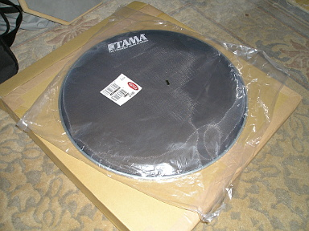
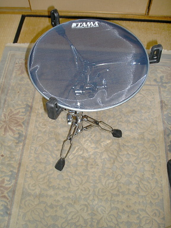
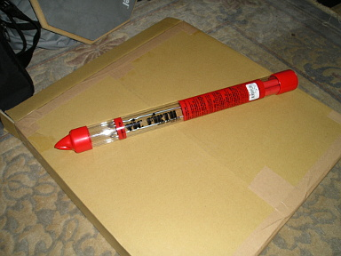
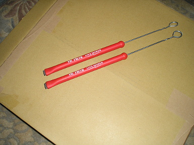
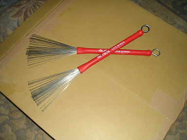
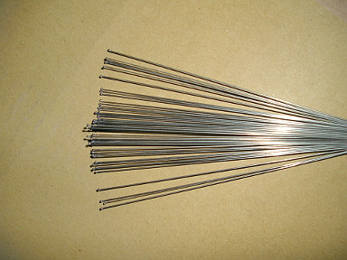

2012 年
05 月 01 日 ( 火 ) skip
自分はふだんはミニマル系の音楽は聴かないのですが、ちょっとこれだけは例外でハマっています。
ミニマルは聴かないっていうけど Ravel の Bolero は？という声が聞こえてきそうですが Bolero は別格です。
もう一つミニマルっぽいけど、ちと違うの。ジャンルとしてはロックになるのかな。ここのとろこずっと頭の中で鳴ってる。
05 月 05 日 ( 土 ) skip

昨日高槻ジャズストリートに弟と行ってきました。これはそのメモになります。
まずは AM 12:00 頃に JK カフェにころがりこんでビールを飲みながら古い Pearl の 3 点セットを眺め倒してました。スネアスタンドのアームの先っぽが樹脂製でなくて金属製！！セットも年代物。セットの名前をメモしておかなかたのが悔やまれます。
12:20 頃にプロテクション・ラケットのスネアケースとシンバルケース ( こちらはメーカーを未確認 ) を抱えたイケメンが来店。12:30 過ぎくらいからバンドのセッティング開始。そこでドラマーさんがペダルを持ってきてないことが判明。すぐさま店の奥から YAMAHA のペダルが。ちなみにハイハットスタンドも YAMAHA。
12:50 くらいからドラムス、ギター、キーボード、ボーカルのカルテット編成の TOT+K ※1 がスタート。スタンダード・ナンバーを演ってらっしゃいました。ドラマーのイケメンの方がこまかい技をいろいろ繰り出されていて勉強になりました。シンバル類がよくわからんかったのですが、あのラインは SABIAN っぽいなぁ、などと思いましたです。勉強になったと書きましたが、もちろん楽しみました。
※1 調べたところ金沢琴美 with 竹田オルガントリオということで Takeda Organ Trio feat Kotomi Kanazawa だったようです。ドラマーの堺貴洋さんのサイトで知りました。
TOT+K さんが終了して JK カフェを後にして市民グランドに向かいます。
にしても天気があまりよくないのに、今年は去年より人が多かった。年々人が増えてきますね。なのでいろんな人も増えてきていますが、それはまた後で。
で、市民グランドに向かう途中で姉妹都市センターでの演奏の音も聴こえてきますが、昔の山下洋輔トリオタイプのフリージャズを演っていて、いまさらこの歳であのタイプのフリージャズもなぁ、と思ってスルーします。
さらに先にすすんでカトリック高槻教会。なんと二日目はここでは演ってないんですね。あれぇ？と思いながらさらに市民グランドに向かいます。
それで現代劇場の前を通る時に弟にここでもやってるよ〜とか説明しているうちに、市民グランドと野見神社からの音が。弟の琴線に触れる音が聴こえたのか弟が野見神社に行きたいとのことで、しばらく野見神社で観てました。
が、だれがプレイしてるのかがわかんない。パンフレットを見るとこの時間は演ってないはずなんだけど。リハだったのかしらん。
で、市民グランドに。
何か食べるなら店があるよ〜、とか一昨年から椅子とテーブルがでるようになったよ〜とか、それまでは全員立ち見だったんだよ〜とか弟に説明していたのですが、もるつオーケストラさんには申し訳ないけど歌謡曲をロック調にアレンジした世界に入り込めなくてすぐに城跡公園に移動。
城跡公園では関大の中高等部の子たちがラテン風の曲をプレイしてました。外人の先生のティンパレスとカウベルの音が通り過ぎてアンサンブルのバランスががががが、と思いましたが静かに見守ります。ドラムの男の子はうまかったです。数小節のドラムソロもあって、いいフレーズを叩いてました。ただなんか楽しそうじゃなかった ＞＜
で、とりあえず昼飯を食いにいくことに。現金がないということでまずはコンビニに金を下ろしに三千里。
コンビニにたどりつくまえに最初に姉妹都市センターの PianoDelic さんの演奏でつかまって、さらに阪急高槻市駅コンコースの演奏と噴水広場の演奏でつかまってしまって、金を下ろして昼飯にありついたのが 15:00。
それから再び市民グランドに向かったのですが、再び弟が野見神社の札幌ジャズほるもんずさんの音につかまりました。Sax の音が琴線に触れるようです。自分もホーンが入った音楽は大好きです。
16:40 頃に市民グランドに移動。目的はもちろん Flide Plide！！
一つまえのバンドが終って司会者さんにインタビューを受けていて、そのインタビューの終り近くで司会者さんが「次はいよいよみなさんお待ちかねの Fride Plide のお二人が登場するわけですが」と口にした途端、パイプ椅子に座っていた人達、立っていた人達がザーっと音をたててステージ直下にゲルマン民族の大移動www
ステージ上にまだいらっしゃった前のバンドの方が「なにこの温度差www」とか笑いながらステージ下をながめてましたwww
Fride Plide なので仕方がないっすwww
自分と弟も空いたスペースに移動しましたですよ。
お二人が登場するまでの時間はテックさんと音響さんのセッティング、チューニング、チェックをガン見させていただいていました。テックさんがステージ上から 250 切ってくださいとか、800 切ってくださいとか切ったぶんあげてくださいとか、そういったやりとりと何をやっているのかガン見させていただいていたのですが…
「立ってる人は座りましょう！！後の座ってる人が見えません！！」
まぁ、そんな声が背後から。
ところが誰も座る気配がない。
それも当然で、文字にすれば穏やかそうに見えますが、口調は上から目線の超命令口調。怒声といってもいい。
というか酒をかっくらってふんぞり返って椅子に座っているその声の主とその取り巻きおばはん連中をのぞいてパイプ椅子軍団は、みんなステージのそばに椅子ごと移動してます。で、このグランドの会場は元々立ち見会場だから、ゲルマン民族化するのはそれは非常に正しい行動www
「立ってみるのはマナー違反だから座るべきだ！！」とおっさんの怒声。
「異議なし！！」「異議なし！！」「賛成！！」と取り巻きのオバハン連中の怒声のシュプレヒコール。
そんなシュプレヒコールがくどくどくどくどくどくどとうんざりするくらい繰り返されるですよ。
正直その場違いなシュプレヒコールの繰り返しにみんなムカつきましたですよ。みんな大人だからライブで熱くなっても喧嘩にはしないけど。
このグランドは本来立ち見会場だし、このグランドでのライブはお上品に座って聴くものじゃないし、それに Fride Plide の熱いライブを座ってお行儀良くご観賞でもすんのか！？ってのもあるし、それより立って熱くなれよってのもあるし ( もちろん無理強いはしないけど )、けっきょく自分たちだけ椅子にふんぞり返って酒のんで聴きたいって欲望オーラが全身から出てんじゃん！！酒のんで椅子に座って踏ん反り返ってえらそうなこと言ってんじゃねぇよ！！ってのもあるし、他人との合意をとろうとすらしねぇその上から目線のえらそうな態度ってなんなの！？ってのもあるし、シュプレヒコールならどっかのでイデオロギッシュなデモででもやれよってのもあるし、なに人の肩つかんでんだよ！？おまえヤーサンか！？ってのもあるし、おまえら TPO って知ってんのか！？ってのもあるし、そんなわけで、みんなそいつらにムカついてました ( 一部個人的なムカつきも含みますwww )。
普段のジャズストの市民グランドでのステージでは、みんな普通に踊ったりするしね。けっこうお歳をめしたじいちゃんがノリノリでステップを踏んだりするのがこの会場でのライブだし！！
実際にみんなマナーが悪いかっていうと、そんなことはぜんぜんなくて、おっさんとおばはんから離れたところで観ていた車椅子の人の周囲のみんなその人が見やすいように座ったり気をくばってた。みんな優しいよ？
大昔の教科書に載ってそうな正しさを「強制」するんじゃなくて、説得と話し合いで「合意」を取るのは大事だよ。偽物の正義を悪用した強制と利己的な自己利益の追求じゃなくてね。わかる？おっさん？おばはん？
まぁ、そんなこともあったのですが Fride Plide のステージは最高でした。shiho さんはオーディエンスを煽るし ( ウェーブもやりましたよ！！サッカーとかでやるあれ！！www )、横田さんは絶妙のボケをかますし、もちろんお二人の音楽は最高です！！
Fride Plide のステージで立ち上がって体が自然と動いてしまうような会場の熱気の再体験と、前述のトラブルがあったことからも、来年から市民グランドのテーブルと椅子は再廃止したらいいんじゃないですかね。だって踊りたい人は踊っちゃうでしょ？体動いちゃうし。立ってハンドクラップしながらステップをふみたいじゃない ※2。
椅子やテーブルは健康上の理由で必要な人にだけ貸し出すって方が、以前の市民グランド会場のように「自由」があっていいと思いますです。自由でありながら譲りあってた。そんな誰にでも優しかったジャズストにもどれると個人的には嬉しいな。
心配しなくてもジャズスト会場は無秩序にはならないよ。もともとみんな節度をもって楽しんでたし、優しいし。
※2 アンコールのときに目の前でハンドクラップしながらノッていた女の子がすごくキュートでした。叩いてる手の動きとか、結んだ髪がリズムにあわせて揺れるのとか、ステップにあわせて揺れるスカートとか、もう「動くキュート」って感じwww 彼氏さんと一緒に来てたみたいだけど、あのキュートさは彼氏さんパワーなんでしょうね。女の子は彼氏のまえで、すごくかわいくなるの法則ですwww 若いカップルかわいいです。とうとうカップルがかわいいと思える年齢になってしまいましたwww
05 月 10 日 ( 木 ) skip
ネット上で知り合った人に、坂道のアポロンというアニメのドラムの演奏シーンの再現性がすごいと教えていただいたので YouTube で動画をあさってみて見つけたのがこれ。
……と書いてたのですが残念ながら動画が削除されてしまったようです。
いや、本当に演奏シーンの再現性がすごいです。タムを叩いたときのタムの揺れとか、バスドラムをキックしたときのタムの微妙な揺れとか、ライドで刻みながら ※1、ときおりアクセントを入れたときのライドの独特の揺れとか、そういったドラムセットの動きがこれでもか！！というくらいに再現されています。 それがドラマー視点に近いアングルで映像化されてる。
またフロアタムのチューニングボルトにチューニングキーが 2 つ刺さってるのとか芸が非常にこまかいwww さらに言うとスタンドに刺さってるウイングナットやフロアタムのフープやチューニングボルトが非常に渋いwww 年代を感じさせます。
一部で話題になってるタムホルダー、ブーム、タムホルダーベースですが ※2、自分には GRETSCH に見えるんですよね。だからセットは GRETSCH でキックのフロントヘッドに YAMAHA とプリントを入れてる説www 違うかもですけどwww
DVD が発売されたら是非ともその目で見てみてください。自分は健康上の理由で体調がいいときでないとアニメとかは見れない人なのですが ※3、ちょっとこれは見てみたいですね。
余談ですが自分はライドでアクセントをつけた直後の 1 発目の音を出すのが苦手だったりします。
アクセントを入れたためにライドの揺れが大きくなって逃げられてしまい、スティックがやや空振り気味になって、欲しい音を出すためのスティック・コントロールが難しかったり。
まぁ、これはレンタルや据え置きの楽器しか経験していないからなのであって、結局自分のシンバルを持って、練習しろってことなんですけど。ヘタクソの証明みたいなwww
だからという訳ではないですが、若いドラマーさんには最低でもハイハット、ライド、クラッシュを購入することをお薦めします。他の楽器とちがって、ドラムという楽器は動きます。しかも個体によって動くスピードや揺れる周期が違ったりします。
マイ楽器を持つ前と持った後では世界が変ります。大袈裟ではなく本当にドラムという楽器との関係が変ります。
と、まぁ、ここまでがんばって書いちゃったので、YouTube の上の動画は消されなければ有難いなぁ ※4。
※1 自分は Jazz の経験はないのでこういう表現になります。レガートをちゃんと叩いた経験がないんですよね。典型的なダメドラマーです。
※2 当事者がなにを言っとるという突っ込みは聴かなかったことにしますwww
※3 音楽すら聴けないこともあります。
※4 全て消されてしまったようです。残念。でも仕方ないですよね。
05 月 12 日 ( 土 ) skip
昔エアチェックした NHK Session '83 の伊藤君子さんと佐藤允彦トリオ ※1 のスタジオ・ライブを、カセットテープからパソコンに取り込んでみました。
すごいノイズですw スクラッチノイズの酷いのみたいですw 再生器の問題なんでしょうね。
※1 佐藤允彦 (Pf)、井野信義 (Bs)、日野元彦 (Ds) という超豪華メンバーです。今は亡き日野元彦さんのプレイが聴ける貴重な音源です。
ちなみにテープの再生に使ったのはこれ。

10 年以上前に購入していらい、ほとんど使っていないソニーのウォークマン。
ウォークマンのヘッドホン端子に接続コードを差し込んで

パソコンの入力端子に差し込む。

これだけですw それにしてもファンのあたりが汚いw
とここまで書きながら取り込んだ音源をチェックしていたら、ファイルが壊れていて、全部やりなおしにwww
05 月 13 日 ( 日 ) skip
なんか届いた

パオーン！！

小笠原朋子さんのたびのほん！！同人誌を購入するのは生涯 2 度目になります。
おそらく小笠原さんの旅レポート系の連載で、出版社発行のコミックスからはドロップされたものプラスαを、小笠原さんご自身がまとめられたものと予測。と、ページをパラパラっとみたらとびだせニッポン！の続編だそうです。自分はもちろんとびだせニッポン！も持ってます。
小笠原さんの連載で単行本未収録分をまとめたものに、これまでもこういうものもあったりします。

が、こちらは単行本全巻揃えたときの特典扱いで、出版社が発行したもの。非売品なので貴重です。余談でさらにくどいようですが、ウワサのふたりのこの二人がやっぱり好きですwww
笹野ちはるさんも単行本制作時にドロップされた自作品を同人誌として出版されていたりします。先に生涯 2 冊の同人誌と書きましたが、もう一冊がこのときめきももいろハイスクール FINAL です。

まるで 4 コマ系のまんが作家さんの作品が好きそうに見えますが、好きなんです。
05 月 14 日 ( 月 ) skip
ポプラちゃんとの蜜月復活！！
再度ブッキングされました。
5 月 28 日に 2 曲やります。前回の話のときとは別の曲です。
本番までリハが 2 回だけwww
リハの回数がまるでプロみたいwww
回数だけがプロみたいwww
しかし総リハ時間はたった 2 時間www
こわいwww
05 月 15 日 ( 火 ) skip
またなんかきた。

おや。メッシュヘッド。

ん？なぜまたスネアスタンドを？

いや、メッシュヘッドはドラムに張るもんだろう？

え？メッシュヘッドを振動吸収用に使うってか？

もうひとつ入ってた。
なんかケバいで。

取り出してみた。

ニョキーン！！
ブラシでした。

しかぁしっ！！
こいつ、ただものじゃない！！
毛先が球！！という歯ブラシのコマーシャルが昔ありました。

先端をアップにしてみました。

ね？球でしょ？
体感的にアタックが増えました。
それとこれで手にワイヤーが刺さらないwww
ドラマーって実際にはあまり激しい動きをするわけでもないのに、他のパートとくらべて、やたらと暑くて汗をかいちゃうじゃないですか。なんでだろーって 20 年近くわかんなかったのですが、昨日やっとその理由がわかりました。
ドラマーは演奏中ずっとラジオ体操してるのと一緒なんですね。昨日某所でラジオ体操をやっているときに気がついたですよ。運動負荷がほぼラジオ体操と一緒だって。ひょっとするとラジオ体操より低負荷かもしれないけど、全身運動なのは間違いないかなと。
なので「久しぶりの練習で筋肉痛だ！！」と言っているドラマーさんは「久しぶりのラジオ体操で筋肉痛だ！！」とか「久しぶりのラジオ体操で脚つった！！」と言っているのと同j…おや、だれか来たようだ。
twitter 経由で。
これもドラムの音がやばいわぁ。西脇さんのハーモニカもやばい。
05 月 16 日 ( 水 ) skip
ポプラちゃんとたわむれてきました。
なんでも手続き上、バンド名のようなものが必要だとかで、とりあえず .kom というのを 3 秒ででっちあげました。
いっそのこと "3 秒で" でもいいんじゃないかという説もあったのですが "バンド名はなんでもいい" とか、"ピンとして春雨" だとかどこかで聞いたことがあるような名前やら、いろいろわらわらとでてきたので、面倒なので全会一致で .kom に。
しかしたった 1 日の演奏のためのバンド名なんて、はっきり言って自分たちにとってすこぶるどうでもいいです。中学生バンドじゃないんだし。
で、なぜかベースがいません。私の知らないところで、いろいろ判断があったようです。その理由は聞いていますが、大人の判断でここには書きません。
そんなわけでボーカル、ギター、ドラムというちょっと変った編成で 5 月 28 日に望むことに。Jazz なんかだとギターとドラムのデュオなんかもありますから、まぁいいんじゃないでしょうか。
そんなわけで 30 分くらい、リハをしてきました。リハ時間が短いのは、以前に私がせっかくセットしたメモリークランプやらが全て外されていたり変えられていたためですが！！
全ての苦労が水泡に帰すとは、やってくれるぜ！！チューニングをさわらなかったことだけは褒めてやる！！
あ、そうそう。以前からポプラちゃんのハイハットだけ、いやに音がいいと思っていました。MEINEL でした。ライドとクラッシュはメーカー不明の鉄板シンバルなんですけどね。
鉄板ライドと鉄板クラッシュはシンバルの音がしません。MEINEL のようにちゃんとしたメーカーのシンバルは、やはり廉価版でも音がそれなりにいいんですね。
思わず今日のリハではクラッシュの代りにハイハット・クラッシュを使い、ライドの代りにハイハットをオープンにしてトップを叩いてしまいました。だってハットの音がいいんですもの。
それと今日は 3 点セットで叩く楽しさに開眼しました！！いやいやフロアタムの出番が増えて、他のアイテムもそれに合わせて生きてくる。こんなに 3 点セットっ楽しかったんですね。いやぁ、3 点セットええわぁ〜
05 月 19 日 ( 土 ) skip
以前 twitter でお気に入りの印をいれた tweet を記録するなど。
@ACT_DRUM: ご来店頂いた枝川さんにリングミュートに使える隠し技を伝授していただきました！なんとリングにドライバーを押し当て突起を作ることでリングとヘッドの間に空間を作り、ミュートのかけ過ぎによる音詰りを解消することができます！コレはスゴイ！ 2012.05.01 21:24

@ACT_DRUM: この突起付リングミュートの良いところは、突起が出ている面と裏側の突起なしの面でミュートの掛け方が変えられるところにあります！8～10個程の突起をリングの気持ち内側に作るのがポイントだそうです！ 神保彰さんも愛用されているそうですよ！ぜひトライしてみて下さい！ 2012.05.01 21:25
ドラムテック枝川さんの技が光ります。
05 月 20 日 ( 日 ) skip
リチャード・クレイジーマンさんの新作！！
リチャード・クレイジーマンさんの新作がきてました。
ドアに書かれてる "閉めろ！！" とか "こぼしたらふけー！！" とかスタッフが書いた指令が懐しいですねw 自分たちが出させてもらっていたハコは、みんな丁寧に使っていたので落描きとかもまったくありませんでしたけど。
でもリハスタは、まぁ、こんな感じでした、落描き的に。それどころかリハスタに入ったらシンバルが割れていたりとか。
シンバルを割ったのなら、ちゃんと申告してから帰りましょう。リハスタのシンバルでは音量が足りない場合は、欲しい音量がでるシンバルを買いなさい。割れてしまうほど力を込めてシンバルを叩いても音量は増えません。
しかしこれは前のバンドが終ったら機材全入れ換えなんでしょうか。だとすると凄い。だって 2 階建ての Marshall のスピーカーボックスまでありますし。左のはなんだろう。機材ケースに見えなくもないけど。でも狭いステージのソデに機材ケースを置くとは思えないから…なんだろう…
余談ですけど、Marshall を 2 階建てにするのは、やはり Ritchie Blackmore の影響なんでしょうかね。僕らの世代は間違いなくそうですけど。
視力が低下している。
最近視力の低下が著しい。
布団に寝ころがってコミックを読もうとするのだけれど、文字がぼやけて小さな書き文字などはほとんど読み取れない。
具体的には山名沢湖さんの恋に鳴る (1) の、サブタイトルかもしくは英語のタイトル "A sound fo love becomes one love." の各文字にピントがあわないというか、それぞれ 1 文字のはずが、少しずらした多くの複数の同じ文字が重なってしまっていて読み取ることができない。
なんだか、わかりにくい説明だな。
つまり、文字レイヤーを多数複製して、それらを少しずつずらして、ある程度透過させて、全レイヤーを統合して保存した！！って感じなのだ。
余計わかりにくいか。
つまりアルファベットの "a" が下図のように見えて読み取れない。
つまり乱視で像が何重にも重なってブレて見えるようなのが、もっと酷い状態ということだ。
なので乱視っぽいなぁ、とは思っていたのだけれど、ある程度離れたり遠くは見えたりもする。疲れてくると本当に乱視になってしまうけれど。
文章はパソコンで打つので問題ないのだけれど、譜面を書くときには自分が書いてる譜面が正しい位置に音符が置かれているのかさっぱりわからず非常に困るので、やはり歳かなぁとションボリ思いながらダ〇ソーで老眼鏡を買ってみた。105 円の老眼鏡だ。
で 105 円の老眼鏡をためしたら…見える！！わたしにも見えるぞ！！
これで勝つる！！(何に
ポプラちゃんをなんとかしたい
ポプラちゃんをまともなドラムセット状態にするにはどうすればいいのか、実作業リストを試作してみました。
- ヘッドは全交換で 1 万 7 千円弱。
- MEINEL のハイハットは錆びてるけどそれがかえってダークなサウンドを生んでて味わいがあるから OK として、ライドとクラッシュは当然交換で、安価なものを選ぶとして合計 2 万円。
- ハイハットスダンドはなぜかボロボロなので交換するということで安めに 7千円。
- シンバルスタンドもダメなので 2 本で合計 1 万 6 千円。
- キック・ペダルはとりあえず問題なく使えるのでそのまま使う。メンテとしてはグリスアップとスプリング交換くらい。
- 各ドラムはシェルは綺麗だからそのままでいいとして、フープ、ラグ、チューニング・ボルト、スナッピー、ストレイナー、バットは全交換で…
……元のセットのシェルしか残らない…えっと。もう新しい TAMA のインペリアルスターを買いなはれ。そっちの方が安い。
んで余った古いポプラ材のシェルだけ私にください。
05 月 22 日 ( 火 ) skip
lost in dance / Hans-Jörg Scheffler
ジャンル的には Smooth Jazz かな？まぁ、なんでもいいや。気持ちがよい。
自分自身がドラムが叩けるということ
自分は健康状態が許すのであればドラムを叩きます。また手元にはモーリスのアコギがころがっています。なので「ドラムが叩けるんですか。すごいですね」だとか「ギターも弾けるんですか。すごいですね」などと言われてしまうことがあります。が自分はまったくすごくないのです。
ギターはせいぜいちょっとしたコード弾きができるぐらいで、ギター弾きの人のようには弾けません。曲を書くときにコードの確認をしたり、ベースラインやメロディーを考えるときに音をだすくらいのことしかできません。
自分の考える「私がギターが弾ける状態」というのは、楽曲があって、その楽曲のアンサンブルに適したフレーズを思いつけて、そのフレーズを弾くのに適した音を適切なフィンガリング、ピッキング、あるいは指で的確に表現することができて、当然ミスなどしない。そういった状態になって初めて、私にとって「私はギターが弾ける」と言うことができると思うのです。
なので私はまったくギターを弾くことができません。中高生のギターキッズのほうがよほどギターを弾けるでしょう。
ドラムも似たようなものです。
私にとって「私がドラムが叩ける」という状態は、楽曲があって、その楽曲のアンサンブルに適したフレーズを思いつけて、そのフレーズを叩くのに適した音を出すのに必要な手順 ※1 とタッチを適切に選ぶことができて、全身くまなく両手両足の指先などの細部に至るまで適切にコントロールして的確にアンサンブルを表現できることができて、当然ミスなどしない。そういった状態になって初めて、私にとって「私はドラムを叩くことができる」と言うことができると思うのです。
なので私はドラムも叩けていないのです。
※1 "手順" とはギターでいう "運指" に相当すると思います。
昔の仲間たち Instant Karma
自分がかつてドラムを叩いてたバンドの動画を見つけましたw
歌っているのはサンプラザ中野さんじゃないよ！！
ちなみにこれらの動画の頃は、わたしはもう抜けたあとで、別の方がドラムを叩いています。
レパートリーとして生き残ると思った曲は、20 年近くたってもレパートリーとして生き残っとるな。
しかしカバー曲とかあるけど大丈夫なんか？権利処理してる？
05 月 24 日 ( 木 )
突然懐古シリーズ
なんか突然懐古シリーズ。
まずは中学生のときにバンドでコピーして人前で演奏したビートルズの音楽たち。人前でといっても文化祭本番まえの練習でだけど。
まずはWhile My Guitar Gently Weeps。
で、Get Back！！
同じく人前だけど、こちらは親戚だとかの前のプライベートな環境で兄と一緒に弾いたりした曲たち。
まずは Yesterday。
んで、And I Love Her。
この頃は自分はまだギターだけをひいている頃。And I Love Her を兄とギターデュオで弾いていて曲が終っ途端、親戚一同へやにドカっと入ってきて拍手されたのを覚えてる。それで調子こいて人前で演奏したいと思うようになったのかも。
なんにせよビートルズは僕の音楽の原点。
突然懐古シリーズ 2 〜中二文化祭篇〜
この頃によくありがちで、お約束なw
Deep Purple の Space Trackin。ケツの Mandrake Root 部分はやってない。
同じく Smoke On The Water。
ほい。Black Night。ここはあえてスタジオ録音盤で。この EP 盤、まだ残ってたっけか？
突然懐古シリーズ 2 〜中二別イベント篇〜
Deep Purple がでるのですから、これも当然でます。
Deep Purple 系列から離れて Vo. の一人が熱をあげていた Kiss より 2 曲。
まずは Detroit Rock City。
そして Love Gun。
もう一人の Vo. が推してやることになった Bay City Rollers。
翌年の 3 年次はこの Vo. がリーダーシップをとって、文化祭で世良公則& ツイストやピンクレディ等歌謡曲を中心に演ることとなる。
自分は 3 年次はプログレ、フュージョン、Jazz、民族音楽、クラシック等さまざまな音楽に傾倒してゆき、バンド活動からは離れることに。20 代後半に Instant Karma のドラマーとして採用されるまでバンド活動から離れることとなる。ギターはずっとひいてたけど。
なので人前では 1 曲を除きカバーは中学生のときにしかやっていない。あとは全部 Instant Karma のオリジナルのみ演奏。